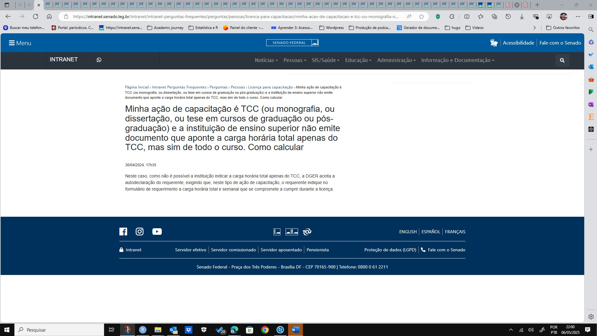

3 QUESTÃO DE ISONOMIA: Diretor do ILB não foi cobrado do mesmo jeito
Há diversos indícios de que o servidor Thiago Cortez Costa tem sido tratado com severidade desmedida e rigor não impostos a outros servidores.
3.1 Apenas para recapitular:
Um ano antes de terminar o prazo que o servidor ainda teria para enviar cópia da tese aprovada e enquanto o curso e o afastamento seguiam em andamento, ILB e DGER iniciaram procedimento contra o servidor para atribuição de responsabilidade por “possível dano” ao objetivo do afastamento (que é a obtenção do título de doutor).
Um ‘dano possível’ ao objetivo do afastamento é por definição um dano ainda inexistente - pois o curso ainda estava em andamento e havia prazo para o concluir. Mesmo se o dano tivesse se concretizado, decorreria de motivo justo e reconhecido de força maior: a enfermidade.
Por isso, a via acusatória deveria ter sido arquivada desde o início, quando o ILB encaminhou uma acusação genérica e sem qualquer indício de irregularidade da parte do acusado. O órgão não logrou apontar sequer uma conduta tipificada, materialmente praticada pelo servidor e com fundamentação em qualquer norma que ao menos em tese pudesse ter sido violada. Pelo contrário, nenhuma das alegações encaminhadas pelo ILB sobre o servidor veio acompanhada de qualquer indicação de norma violável.
A despeito da clara inexistência de ilegalidade e da impossibilidade de legalmente punir alguém por um dano apenas imaginado (inexistente empiricamente), DGER e ILB prolongaram o processo de outubro de 2023 a 05 de fevereiro de 2025.
Nesse meio tempo, ILB e DGER variaram versões em um libelo acusatório mutante, testando fórmulas diferentes à busca de uma que fosse minimamente eficaz para o que queriam: realizar seu ímpeto punitivo. Assim, questionaram comprovação de frequência, carga horária, créditos previstos em grade curricular do curso, comprovante de créditos cumpridos, comprovante de créditos faltantes, provas de realização de atividades acadêmicas, de aproveitamento dessas atividades, de produção científica, além de declarações da Universidade, histórico acadêmico, etc.
Mesmo que o servidor tenha apresentado todos os documentos e provas solicitadas, ainda assim foi penalizado por acusação de base meramente retórica e genérica de descumprimento parcial de ação de capacitação. É um tratamento bastante distoante daquele que é majoritariamente oferecido a outros servidores em afastamentos diversos para capacitação, pelo que se vê da Intranet do Senado. Vejamos alguns exemplos adiante.
3.2 Autodeclaração de carga horária em ação de capacitação
Vê-se, por exemplo, na seção de perguntas e respostas da Intranet do Senado Federal, que a DGER admite auto-declaração de carga horária a cumprir e cumprida no lugar de certidões oficiais emitidas pelas instituições de ensino responsáveis:
 FAQ da Intranet aponta que DGER aceita autodeclaração de carga horária como documento válido, em processo, para justificar participação de servidor numa ação de capacitação
Abaixo, a transcrição do texto contido no print de tela da página da Intranet com as FAQ:
“Minha ação de capacitação é TCC (ou monografia, ou dissertação, ou tese em cursos de graduação ou pós-graduação) e a instituição de ensino superior não emite documento que aponte a carga horária total apenas do TCC, mas sim de todo o curso. Como calcular[?]”
30/04/2024, 17h35
Neste caso, como não é possível a instituição indicar a carga horária total apenas do TCC, a DGER aceita a autodeclaração do requerente, exigindo que, neste tipo de ação de capacitação, o requerente indique no formulário de requerimento a carga horária total e semanal que se compromete a cumprir durante a licença.
Se não há declaração oficial da instituição de ensino sobre a carga horária, então não há equivalente comprovante oficial de cumprimento de carga horária. Logo, ao admitir autodeclaração como um compromisso a cumprir, necessariamente a Administração contentar-se-á também com a posterior autodeclaração de efetivo cumprimento, ou sequer cobrará o servidor a respeito de créditos ou de carga horária. O servidor, porém, ainda precisará apresentar a comprovação de que concluiu a capacitação com êxito.
Isso está de acordo com os princípios da boa fé do servidor e da presunção de inocência. Indica que a Administração se preocupa com o resultado final da capacitação mais do que com a formalidade em si de comprovar carga horária em disciplinas formais.
A diretriz sobre a possibilidade de auto-declaração (e da liberdade para planejamento dos próprios estudos), contudo, destoa da conduta da Administração em relação ao caso porque:
Sem que esteja previsto nos normativos como obrigação, DGER e ILB fazem exigências ao servidor para que comprove matrícula em disciplinas todos os semestres e demonstre aproveitamento nelas. A exigência contrasta-se com o fato de que, no mínimo, metade do trabalho envolvido numa pós-graduação stricto sensu se passa fora de sala de aula, em pesquisa bibliográfica e empírica. Na fase de elaboração da tese, pode chegar a 100% o trabalho desvinculado de disciplinas formais. Se o discente declara que trabalhou na tese e apresenta textos como resultado, é inadequada a rejeição dos resultados que ele apresenta enquanto se aceita a auto-declaração de servidores licenciados ou afastados exclusivamente para o trabalho final, conforme a FAQ já referida.
Como visto na FAQ da Intranet, tais exigências são impostas especificamente a este servidor e não são praticadas em relação a todos.
O servidor, em seu relatório (p.1002-1046, NUP 00200.003561/2020) e em manifestação (p. 1440-1447, NUP 00200.003561/2020), apresentou os resultados do semestre (p.ex.: a íntegra de um artigo publicado, o certificado de apresentação em congresso mundial; a íntegra de outro artigo pronto para publicação; comprovantes de sua participação nas disciplinas) e, apesar disso, foi penalizado.
Isso significa que, enquanto alguns indivíduos podem apresentar somente a auto-declaração, a DGER e o ILB desconsideraram arbitrariamente, deste servidor, tanto as declarações por escrito no processo quanto as provas documentais apresentadas.
A dispensabilidade conforme anunciada na intranet em relação à prestação intermediária de comprovantes de atividades do afastamento desnuda de forma ainda mais premente o alto custo que a Administração impôs especificamente a este servidor no caso do processo de [NUP 00200.003561/2020]^(images/conteudo_processos/002000035612020_autos_completos_30_04_2025.pdf): a título de mero monitoramento, acumulam-se já quase 2.000 (duas mil) páginas - para não mencionar todo o desgaste, estresse, energia e tempo requeridos do servidor até chegar nesse volume de informações, e os efeitos colaterais disso.
A diferença de tratamento dispensado ao servidor em relação à prática informada nas FAQ (Perguntas e Respostas) da Intranet viola, portanto, o princípio da impessoalidade na Administração Pública, além da razoabilidade e legalidade.
Ressalte-se ainda que em meados de 2023 (antes do procedimento acusatório) já havia 1.000 (mil) páginas no processo NUP 00200.003561/2020, vide a p.999), o que indica que o grande volume de informações não é devido à suspeita de irregularidade, antes decorre do próprio monitoramento feito no Senado.
Ademais, o monitoramento dos resultados acadêmicos do servidor já é realizado rotineiramente pela Instituição de Ensino a que está vinculado, a qual decide, a cada disciplina cursada, se o discente atingiu o objetivo ou não, se teve rendimento adequado ou não, merece ser aprovado ou não. Trata-se de um julgamento didático-pedagógico típico da Universidade. Fazê-lo no Senado através do ILB, mostra-se inadequado e antieconômico. A redundância da atividade no Senado evidencia ineficiência na alocação de pessoal, de tempo e de energia. Daí decorrem o desperdício de recursos públicos e o custo de oportunidades perdidas com o emprego subótimo dos insumos à disposição da Administração. Contraria-se assim um dos princípios basilares da política de capacitação do Senado, a “submissão à indisponibilidade do interesse público” (inciso X, Art. 3º do Anexo IV do RASF).
A redundância do monitoramento e os eventuais desdobramentos de seus resultados violam a autonomia universitária estabelecida na Constituição Federal de 1988. O julgamento administrativo realizado no Senado acerca de aproveitamento ou não aproveitamento do ensino, especialmente em se tratando de conceito não especificado nas normas e portanto submetido a julgamento subjetivo do gestor, conflita-se com o princípio da separação entre os Poderes e pode configurar ingerência em atividade de órgão do Poder Executivo, na medida em que avalia o mérito do resultado obtido pelo discente no âmbito da política educacional e pedagógica adotada pela instituição de ensino.
3.3 DGER e ILB fazem exigências que o próprio diretor do ILB não teve de cumprir em seu afastamento
A acusação contra o servidor tem se apresentado em diferentes versões até o momento, sendo adulterada à medida que o servidor apresenta provas contradizendo-as. Já se alegou contra o servidor que há:
[Ausência de atividades acadêmicas no 1º Semestre de 2023]^(images/conteudo_processos/002000035612020_autos_completos_30_04_2025.pdf), na transição da p. 1355 para a p. 1356, do processo 00200.003561/2020.
Ausência de [‘aproveitamento’ de ação de capacitação estritamente referente à pós-graduação stricto sensu]^(images/conteudo_processos/002000035612020_autos_completos_30_04_2025.pdf) no período letivo cursado durante o 1º semestre de 2023, p. 1487, do processo [00200.003561/2020]^(images/conteudo_processos/002000035612020_autos_completos_30_04_2025.pdf).
Falta de comprovação de que as atividades relatadas no 1º Semestre de 2023 representam avanço no curso
Falta de declaração da Universidade de que requisito foi cumprido
Atrasos ou inadimplência na entrega de relatórios
Falta de versões prévias que indiquem avanço na elaboração da tese
Datas de início e fim de semestre letivo relatadas, isto é, não documentadas oficialmente
Não apresentação dos comprovantes de conclusão (enquanto ainda nem estava terminado)
O Diretor do ILB que recomendou a ‘cassação parcial do afastamento’ no presente caso, servidor Fernando Boarato Meneguin, esteve afastado para pós-graduação entre agosto de 2015 e julho de 2016. Vejamos como foi:
participei de um workshop de Direito e Economia que aconteceu durante todo o segundo semestre (…) os estudos aqui na Universidade da Califórnia permitiram-me engajar em algumas pesquisas, sendo que alguns frutos (…) já se encontram em textos (…): Boletim nº 34, de 2015; Economia Comportamental aplicada a políticas públicas; Boletim nº 35, de 2015
Durante o primeiro semestre de 2016, continuarei assistindo a palestras e seminários e desenvolvendo pesquisas na área de avaliação de impacto regulatório e na área de propriedade intelectual (…). Por fim, ressalto que o pós-doutorado não é um curso no seu sentido estrito, de forma que não há comprovante de frequência ou histórico escolar. Trata-se de um período de estudos e pesquisas acadêmicas (…). De qualquer forma, anexo a este relatório carta assinada pelo Professor Robert Cooter confirmando minha participação no Programa de Direito e Economia da Universidade da Califórnia. (pp. 6 e 7, 00200.009460/2014-51 volume 2 - 00100.071233/2016-34)
Vê-se que o NUP do relatório do 2º semestre de 2015 é do ano de 2016 (00100.071233/2016-34), mais precisamente, de 10/05/2016. E a carta assinada pelo mentor, falando sobre como havia sido a participação do diretor do ILB no 2º semestre de 2015, na verdade era do começo do período:
 Esta é a carta do Prof. Robert Cooter. Datada de 15/06/2015 e, portanto, antes do semestre acontecer. Trata-se de uma declaração de aceite do início do período, não uma descrição de como o servidor havia participado ao longo dele - ao contrário do que o relatório sugeria
Esta é a carta do Prof. Robert Cooter. Datada de 15/06/2015 e, portanto, antes do semestre acontecer. Trata-se de uma declaração de aceite do início do período, não uma descrição de como o servidor havia participado ao longo dele - ao contrário do que o relatório sugeria
Em suma, o processo de afastamento do diretor do ILB para pós-graduação revela que não há registro oficial da participação dele em nenhuma atividade acadêmica, seja a participação em disciplinas formais, ou no workshop com encontros esporádicos ao longo do semestre, ou mesmo o engajamento em pesquisa.
Todas as atividades são presumidas apenas a partir do relato por escrito enviado pelo diretor do ILB. A única comprovação formal que ele teria de sua participação naquele semestre da ação de capacitação era uma declaração do mentor. Contudo, essa declaração não poderia relatar as atividades realizadas pelo diretor do ILB no 2º semestre de 2015, porque foi assinada antes do semestre acontecer.
O diretor do ILB não apresentou histórico, nem frequência, nem comprovante de matrícula, porque “o pós-doutorado não é um curso estrito”, conforme afirmou no relatório. Também não foi incluído no processo nenhum registro de comunicação entre mentor e mentorado, ou de presença no workshop, nem documento que demonstrasse etapas das pesquisas desenvolvidas, ou engajamento nas atividades acadêmicas daquela prestigiada Universidade.
Como resultado concreto dos estudos, o diretor do ILB indicou links para três artigos de sua autoria: nenhum deles em língua inglesa, dois publicados na própria página da consultoria e o terceiro, como capítulo de um livro em co-autoria. O livro já estava disponível para download em 28/07/2015 - antes do semestre começar.
Note-se que o relatório com as informações sobre 2015 só foi adicionado ao processo em 10/05/2016 - apenas 2 meses antes da ação de capacitação do diretor do ILB terminar. A ausência de prova documental da participação do diretor no 2º semestre de 2015, a declaração do mentor anterior ao período, a não comprovação de quaisquer atividade acadêmica vinculada ao curso, a não comprovação de como os artigos publicados representavam avanços no objetivo da ação de capacitação, a falta de uma declaração formal da Universidade atestando que os artigos ou quaisquer outras atividades do diretor cumpriam com o objetivo da ação de capacitação, a ausência de planejamento indicando que atividades seriam desempenhadas no período seguinte e de como elas contribuiriam para o projeto de pesquisa desenvolvida naquela ação de capacitação, o envio do primeiro relatório quase no final do afastamento, a inexistência de matrícula em disciplinas, a inexistência de comprovação de aproveitamento ou de obtenção de créditos em disciplinas, a falta de um histórico que comprovasse o avanço do diretor do ILB na ação de capacitação, enfim, todos esses fatos foram recebidos pelo ILB com naturalidade, sem que houvesse qualquer comoção, estranhamento, cobrança, alegação de descumprimento, nem penalização de qualquer tipo.
Chama atenção, em especial, a disposição do diretor do ILB para tentar invalidar os artigos produzidos como comprovação de atividade acadêmica válida e ‘aproveitável’ realizada no 1º semestre de 2023, no meu caso. Contrasta bastante com sua própria experiência de afastamento, visto que tudo o que o diretor do ILB apresentou de efetivamente concreto foram os artigos escritos - ainda que um tenha sido aparentemente escrito antes do afastamento.
O documento seguinte no processo, datado de 27/06/2016, é um informe de conclusão antecipada, em que o servidor diz que encerraria a ação de capacitação no dia 09 de julho, no dia 10 chegaria em Brasília e já estaria de volta ao trabalho no dia 11/07/2016. Assim, pediu a alteração de início e término de seu afastamento para 03/08/2015 a 09/07/2016. No dia 11/07/2016, a matéria estava assinada pela Coordenação de Pessoal Ativo, no dia 13, pela Secretaria de Gestão de Pessoas. Foi publicada dia 18, contudo, com data de retorno para o dia 09/07/2016.
Não por me importar com as datas do diretor, mas por ser parte afetada pela diferença de tratamento, pergunto: o diretor interrompeu sua ação de capacitação no dia 09/07 sem a autorização da DGER ter sido devidamente publicada? Isto é, Sem ter o encerramento antecipado deferido (já que só foi publicado dia 18)? Ou a Casa aplicou contagem de prazo ficto retroativo sem o servidor ter efetivamente retornado no dia 09/07?
A respeito da conclusão efetiva da ação de capacitação, uma vez que foi antecipado o seu término, a Casa simplesmente admitiu o retorno do diretor. Não se solicitou qualquer indício de obtenção de título, de conclusão de atividades, ou declaração da Universidade de que os objetivos hajam sido atingidos. Não há nem mesmo um registro dos resultados nas disciplinas de que ele relatou ter participado. Tampouco ficou demonstrado qual foi o fato que demarcou no tempo o término da ação de capacitação para que ele a tenha finalizado. A isso soma-se a declaração da diretora do programa de Pós-Doutorado, em data posterior à do comunicado de conclusão antecipada. Nesse documento, a acadêmica afirma que o compromisso do diretor é para as datas de 1 de agosto de 2015 a 31 de julho de 2016. Diante da ausência de outras evidências das realizações acadêmicas, a declaração da professora e a alegação de conclusão antecipada conflitam entre si e deixam margens a questionar se houve ou não o efetivo cumprimento de toda a ação planejada.
A conclusão que tudo isso leva é a de que não há qualquer elemento de ilegalidade na conduta do servidor. O diretor do ILB encerrou antecipadamente sua ação de capacitação, sem autorização publicada, sem comprovação de conclusão, sem registro oficial de matrícula, sem qualquer elemento que caracterize aproveitamento, passou incólume, sem receber reprimenda alguma da Administração. O caso do diretor do ILB demonstra que tais ‘deveres’ são elementos exorbitantes, não-exigíveis do servidor como o têm feito até agora DGER e ILB; ou que há seletividade da Casa na aplicação rigorosa de seus normativos internos.
Todas as exigências que ILB e DGER fizeram no meu caso foram quebradas no caso do diretor do ILB. Com a diferença que eu: 1) comprovadamente fiquei doente, o que é suficiente motivo para justificar o meu resultado naquele semestre; 2) trouxe, aos autos, registros oficiais e documentais de minha participação ativa nas atividades acadêmicas da Universidade de Brasília; 3) apresentei os resultados de minhas atividades acadêmicas, documentados por certificado, texto publicado, e cada um etc.